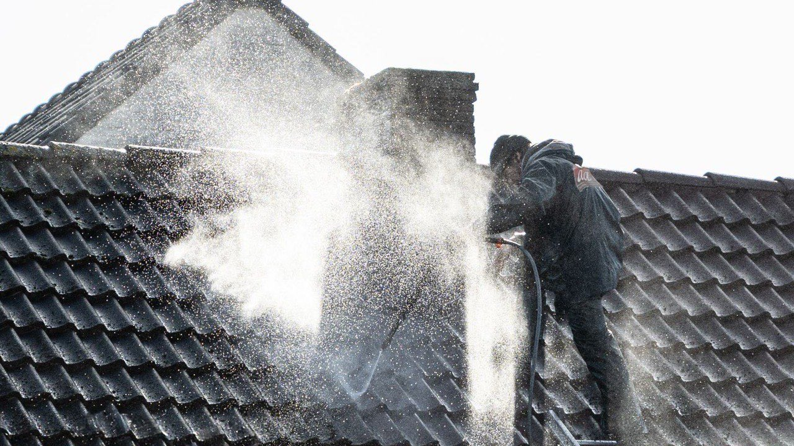
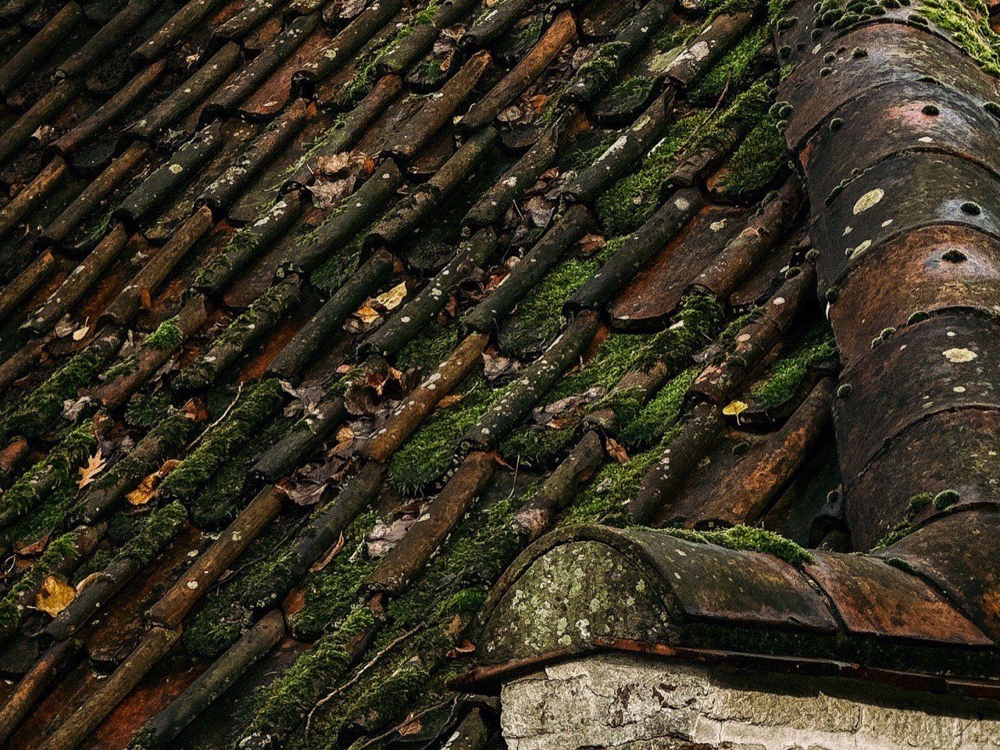
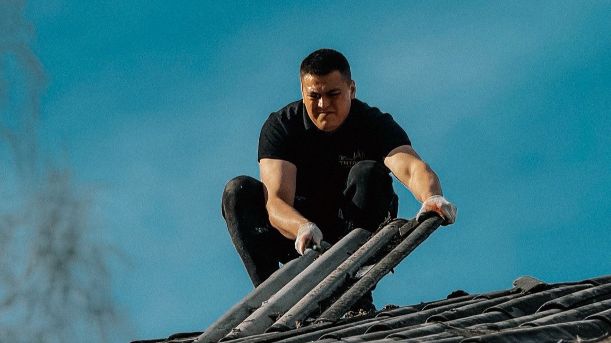

Votre toiture démoussée et protégée pour des années.
Mousses, lichens, tuiles qui noircissent : on nettoie, on traite, on protège. Vous ne montez pas sur le toit, vous ne payez rien avant d'avoir vu le devis.
- Devis gratuit et chiffré sous 24 h, sans engagement
- Artisan local, assuré et travail garanti
- Sans haute pression : la tuile n'est jamais abîmée
- Photos avant / après remises en fin de chantier
Réponse le jour même du lundi au samedi, 8 h à 19 h.

La mousse ne fait pas que salir votre toit.
En Dordogne, l'humidité des vallées de l'Isle, de la Vézère et de la Dordogne, les brouillards d'automne et l'ombre des chênes font prospérer mousses et lichens sur les toitures. Laissés en place, ils travaillent la couverture de l'intérieur.
La tuile se gorge d'eau
Les racines soulèvent la tuile et retiennent l'humidité. La terre cuite devient poreuse, se fendille et vieillit deux fois plus vite.
L'eau finit par passer
Infiltrations dans les combles, isolant gorgé d'eau, taches au plafond : la facture change d'échelle.
Les gouttières se bouchent
Les déchets végétaux descendent, l'eau déborde et ruisselle le long de la façade.
La maison perd de sa valeur
Un toit vert est la première chose que voit un acheteur, et le premier argument de négociation.
Quatre étapes, un seul artisan.
Du diagnostic à la protection longue durée. Tout est annoncé sur le devis, rien ne s'ajoute en cours de route.
Diagnostic gratuit
Montée sur le toit, état des tuiles, du faîtage et des gouttières. Vous recevez des photos et un devis clair.
Démoussage
Grattage manuel et basse pression, sans jamais décaper la tuile. Évacuation complète des déchets végétaux.
Traitement anti-mousse
Application d'un produit curatif qui détruit les spores en profondeur et retarde nettement la repousse.
Hydrofuge de protection
En option : hydrofuge incolore ou coloré. L'eau perle, la tuile respire et retrouve sa teinte.
Compris dans chaque chantier
- Protection des abords et des plantations
- Nettoyage des gouttières et des descentes
- Remplacement des tuiles cassées repérées
- Évacuation des déchets en fin de journée
- Photos avant et après remises au client
- Facture détaillée, garantie sur le traitement
Ce qu'on enlève, ce qu'on rend.
Un démoussage bien fait ne se voit pas seulement du sol : il redonne au toit sa capacité à évacuer l'eau.


Photos d'illustration du métier, pas de chantiers de l'entreprise. Vos propres photos avant / après vous sont remises en fin d'intervention.
Combien coûte un démoussage en Dordogne ?
Personne ne peut annoncer un prix juste sans avoir vu le toit. Deux maisons de même surface ne se chiffrent pas pareil selon la pente, l'accès et l'état des tuiles.
Grattage, basse pression, traitement anti-mousse curatif et évacuation des déchets.
La formule complète : le toit est nettoyé, traité, puis protégé durablement.
Le chiffrage est gratuit et remis après visite. Il est détaillé poste par poste, valable un mois, et vous n'avancez rien pour l'obtenir.
Ce qui fait varier le prix
- La surface de toiture développée
- La pente et la hauteur du bâtiment
- L'accès : échafaudage ou nacelle nécessaires
- Le type de couverture : tuile canal, mécanique, ardoise
- L'épaisseur de la mousse et l'état du faîtage
- Le choix d'un hydrofuge incolore ou coloré
Visite et devis gratuits, aucun acompte demandé.

Un toit vert ce printemps, une réfection dans cinq ans.
Un démoussage coûte une fraction d'une réfection de toiture. Faites-le vérifier tant que ce n'est qu'un nettoyage.
Ce que disent nos clients.
[ Avis Google à coller mot pour mot ]
[ Avis Google à coller mot pour mot ]
[ Avis Google à coller mot pour mot ]
Ce qui se passe après votre demande.
Vous laissez un numéro, pas votre après-midi. Voici le déroulé exact, et ce qu'il ne comprend pas.
On vous rappelle
Le jour même en général, sous 24 h ouvrées au plus tard. Un seul appel : si vous ne répondez pas, on laisse un message et on attend votre retour.
On convient d'un passage
À l'heure qui vous arrange. L'artisan monte sur le toit, contrôle les tuiles, le faîtage et les gouttières, et vous n'avez pas besoin d'être là si l'accès est possible.
Vous recevez le devis
Détaillé poste par poste, avec les photos de ce qui a été vu. Valable un mois, sans engagement, et vous n'avancez rien.
Vous décidez
Si vous dites non, l'histoire s'arrête là : pas de relance insistante, pas de numéro revendu. Si vous dites oui, on cale une date ensemble.
Ce que la demande n'engage pas
- Aucun paiement, aucun acompte
- Aucune donnée revendue ni partagée
- Aucune relance après un refus
Périgueux, Bergerac, Sarlat et tout le Périgord.
Nous intervenons dans toute la Dordogne, du Périgord blanc au Périgord noir, de Périgueux à Sarlat et de Bergerac à Brantôme.
Votre commune n'est pas dans la liste ? Appelez-nous, on vous dit tout de suite si on se déplace.
Vous vous demandez…
Une question qui n'est pas là ? Un appel suffit, on répond sans jargon et sans forcer la vente.
06 98 29 79 95Combien coûte un démoussage de toiture ?
À quelle fréquence faut-il démousser en Dordogne ?
Utilisez-vous un nettoyeur haute pression ?
Dois-je être présent pendant l'intervention ?
Combien de temps dure le chantier ?
L'hydrofuge, c'est vraiment utile ?
Y a-t-il une aide ou un crédit d'impôt ?
Intervenez-vous sur les copropriétés et les locaux professionnels ?
Faites vérifier votre toit, c'est gratuit.
Un artisan passe, monte, regarde et vous dit ce qu'il en est. S'il n'y a rien à faire, il vous le dira aussi.
Demander mon devis
Deux champs, un rappel sous 24 h ouvrées.